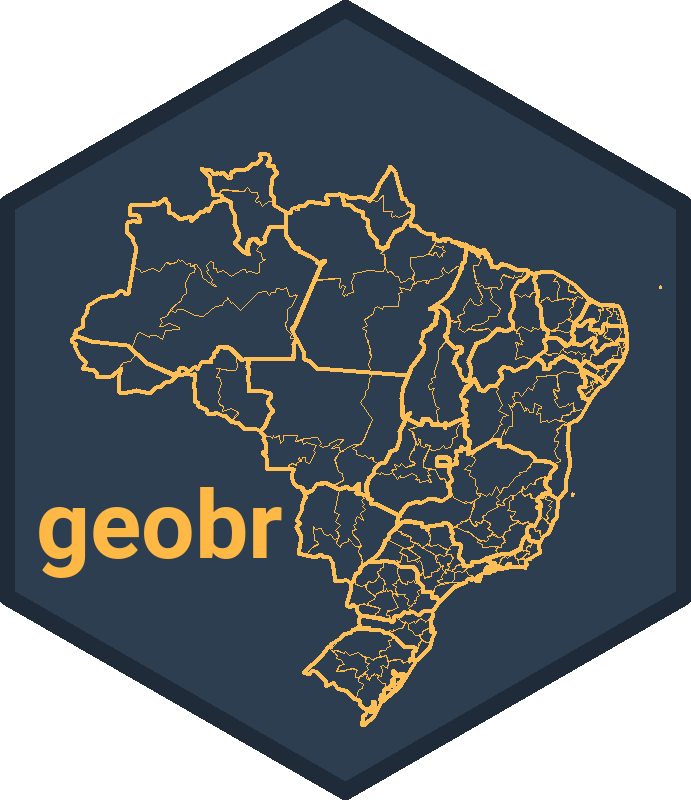

Ou entre pelo seu caminho
Funciona no navegador, sem cadastro.
Conhece uma feira ou loja de orgânicos? Cadastre no mapa "Onde comprar" →Onde se produz e onde se pesquisa
Cada ponto ocre é um município com produtores orgânicos cadastrados. Cada ponto verde é um município citado em pesquisas da Embrapa sobre o tema. Onde só há ocre, a produção anda sem ciência por perto.
O que você encontra
Onde as coisas acontecem
Estados e municípios com conteúdos da Embrapa e com produtores orgânicos, com camada de biomas.
Onde falta pesquisa
62 produtos comparados: quantos produtores declaram cada um e quanto a Embrapa já estudou em sistema orgânico.
Quem trabalha no tema
Pesquisadores e pesquisadoras ligados a cada recorte de produto, tema, lugar e período.
Perguntas em palavras simples
"Quem pesquisa mel na Caatinga?" O assistente responde com os dados e ajusta o mapa, sem conta e sem enviar nada para fora.
De onde vêm os dados
Todas as fontes são públicas. Os conteúdos foram classificados por uma taxonomia de orgânicos e agroecologia; os lugares, por município, região e bioma.
 Embrapa
EmbrapaPublicações, projetos de pesquisa e soluções tecnológicas, além do cadastro de autores da empresa.
base de setembro de 2026 CNPO MAPA
CNPO MAPACadastro Nacional de Produtores Orgânicos: produtores, municípios, produtos e quem garante o selo.
janeiro de 2026 SIGORG MAPA
SIGORG MAPASistema de informações de orgânicos: unidades de produção, atividades e validade dos certificados.
certificados 2025–2026 IBGE
IBGELista de municípios e estados, malha municipal de 2022 e mapa de biomas de 2019.
localidades · biomas
geobr IpeaPacote aberto do Ipea que distribui as malhas oficiais do IBGE usadas nos mapas.
malhas geográficas